A mi hermano mayor siempre le ha apasionado todo lo relacionado con los ordenadores y la robótica, hace unos 4
años empezó a aprender aprogramar y claro, como todo hermano pequeño, yo también quería hacer lo que él hiciese, así que empecé a pedirle
ayuda y aprendí programación básica en los lenguajes de programación CSS y HTML, pero me cansé al poco tiempo.
Entonces cuando nos dijeron a principio de este curso que teníamos que crear un blog, pensé que sería muy buena idea programar una página
web, para la documentación de CAS, ya que aparte de ser una actividad entretenida, es interesante que pueda crearla a mi gusto y no tener
que basarme en una plantilla ya proporcionada.
Al principio estaba muy emocionado y dediqué 8 horas en las primeras dos semanas, pero por el colegio lo dejé un poco de lado, ahora lo
he vuelto a retomar y ya es como una rutina para mí, los domingos por la mañana me pongo a programar y añado cualquier detalle a la
página web. Además, tengo la ventaja de que puedo pedir ayuda a mi hermano para que me resuelva cualquier duda, pero principalmente uso
Codecademy.com, una página web que contiene varias guías educativas gratuitas de distintos lenguajes de programación.
No todo ha sido sencillo, no siempre encuentras la solución a tus problemas, por ello hay cursos y hasta en la universidad, hay clases de
resolución de problemas mediante la programación. Lo más complicado hasta ahora ha sido colocar imágenes en el espacio, al final logré
sacarlo pero simplemente ponerla centrada y como yo quería me llevó un par de horas.
Crear una página web es un proyecto que implica estar pensando constantemente ideas nuevas para añadir a este o detalles para hacerla más
agradable,lo que yo hago es cada vez que se me ocurre una idea me la apunto, suelo tener la mayoría de ideas en el autobús yendo al
colegio. Mi teoría es queestoy “fresco”, ya que me acabo de levantar y aún no estoy cansado mentalmente ya que no he tenido clase aún.
A principios de 2020 empecé a hacer ejercicio en casa, salía mucho a correr, me compré una barra para hacer dominadas
en casa y empecé a ver vídeos para hacer ejercicio sin necesitar equipamiento. Solo lo hacía porque me sobraba tiempo libre y notaba avances,
sobretodo que al jugar al tenis, podía aguantar más y darle con más fuerza.
Llegó la cuarentena y como tenía mucho más tiempo libre, empecé a tomármelo más en serio, empezaron a interesarme los vídeos sobre ejercicio,
de cómo tenerbuena forma a la hora de hacer ejercicios, de nuevos ejercicios que no conocía, y algunos más científicos principalmente sobre
optimizar el crecimiento de los músculos, con esto me refiero a cada cuanto tiempo se deben trabajar o cuanto tiempo se debe descansar entre
series.
Cuando cumplí 16, justo antes de empezar este curso, me apunté al gimnasio y empecé a ir como 6-7h por semana, ahora 5-6 horas porque hay más
trabajo que hacer, y creé una tabla de ejercicios para mi rutina a la hora de ir al gimnasio:

Esta sería la plantilla que he estado utilizando, suele haber dos generales, yo pensé que esta sería mejor ya que se dividen los días por zonas
que trabajas, es decir, al hacer pecho sueles hacer tríceps, por ello los pongo el mismo día. El día de descanso suele variar dependiendo del
trabajo que tenga que hacer por la tarde. Dentro de cada grupo muscular he ido cambiando los ejercicios al cabo del tiempo para elegir los mejores
para mí, ya que cada persona es diferente. Además, otro factor importante es que los músculos deben descansar 48 horas aproximadamente, por eso
los trabajo cada 2 días.
Crear la tabla fue una tarea bastante sencilla ya que llevaba desde el principio el verano deseando poder ir al gimnasio, en cambio ser constante
e ir al gimnasio tantas horas a la semana ha sido bastante complicado. La mayoría de la gente que ha probado el gimnasio acaba dejándolo,
sobretodo si tienes un trabajo o estudios que te lleven mucho tiempo. Pero yo disfruto yendo al gimnasio así que me esfuerzo por ser constante
y mantener mi afición. Hay épocas en las que estoy más motivado y otras en las que menos, sobretodo porque hay muchos obstáculos que te frenan,
si quiero ir al gimnasio entre semana después de hacer los deberes y estudiar prácticamente no tengo más tiempo libre. Otro obstáculo es que hay
días muy fríos o lluviosos en los que no tienes ganas de ir al gimnasio, ya que hacer ejercicio significa ponerte en una situación en la que tienes
que ganar al esfuerzo y al dolor, lo cual no siempre apetece.
El viernes pasado durante las horas de CAS jugamos al flag las dos clases del IB, el flag es un deporte parecido al
fútbol americano. Se juega en equipos, se podría decir que se divide el juego en dos fases que van alternando entre un equipo y otro, al
igual que el baseball en el que unos batean y otros defienden, en el flag unos atacan y otros defienden. El objetivo de los atacantes es
llegar al otro lado del campo, el de los defensores es impedirlo. El juego comienza cuando el center, un jugador del equipo atacante le
pasa el balón (de fútbol americano) al quarterback, un jugador atacante que pasará el balón a uno de sus compañeros y este correrá, pero
tiene más movimientos más avanzados como pasar el balón a uno detrás del área se saque y que este sea el que corra o pase a un compañero
el balón. Cuando un jugador atrapa el balón, tiene que correr hasta llegar al final del campo, no puede pasar. Hay tres intentos para
conseguirlo, si no se consigue se cambia, finalmente se puede impedir de 3 maneras: que los atacantes marquen quitándoles una de las dos
telas que llevan en la cadera, que intercepten el balón y que toque el suelo.

Flag siempre ha sido uno de mis deportes preferidos, a veces pienso apuntarme a algún club fuera del colegio, pero nunca lo hago, ya que
no tengo tanto tiempo y no es una preferencia. Esta clase fue bastante entretenida, aunque no ganamos todos los partidos, yo creo que
habríamos ganado todos, aunque una persona de nuestro equipo se lesionó. Además, que estuviesen juntas las dos clases lo hizo más divertido,
ya que así descubrimos cosas sobre los de otras clases, como si les gusta el deporte o cómo actúan después de ganar, si lo viven o no, etc.
Al empezar este curso decidí que para poder ir al gimnasio tantas horas como quería a la semana, para tener tiempo suficiente
para hacer los deberes y para tener un mínimo de tiempo libre, tenía que dejar las clases de tenis. Entonces, Víctor Baeza y yo acordamos jugar
al tenis un par de veces por trimestre, así no perdíamos nuestras habilidades y además de ser también una actividad divertida, ya que estamos muy
igualados.
El sábado 31 de octubre y el domingo 8 de noviembre jugamos los dos partidos. Lo malo de que sea otoño es que anochece muy pronto, por tanto
hace bastante frío y jugar al tenis con las manos frías no es lo más preferible. Aprovechamos también el domingo para jugar al pádel con más
amigos, el único inconveniente es que no tuvimos la opción de encender los focos y jugamos con muy poca luz.

Mi objetivo era recordar cómo jugar otra vez, sobretodo mejorar mi derecha y cortada de derecha. Me sorprendió que no había perdido mi golpe
por completo, de hecho jugué bastante bien. Durante el primer partido jugamos peor que cuando teníamos clases de tenis, pero no tanto como
esperábamos, mis saques de hecho fueron casi mejores que antes. Acabamos empatando, 5-5, y no pudimos terminarlo porque se nos acabó el tiempo
de reserva de la pista.
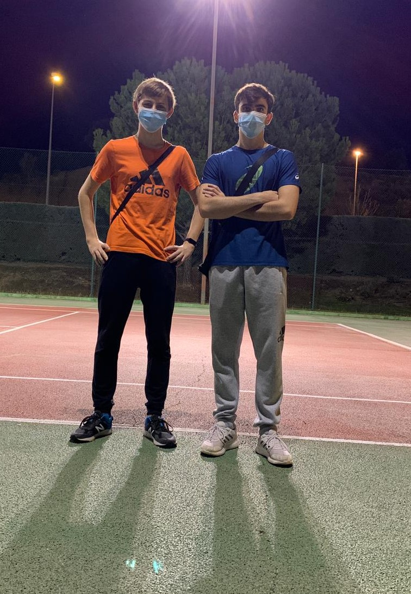
El segundo día acabó ganando Víctor, pero estuvo bastante reñido. El hecho de que estemos tan igualados hace la actividad más entretenida y
competitiva, por ello estamos de acuerdo en que queremos repetirlo en un futuro próximo.
Hace dos meses pensé que sería buena idea organizar una recogida de basura por Molino de la Hoz, así que el
viernes pasado pensé que sería el día adecuado, ya que salimos pronto y podíamos pasarnos esa hora después del colegio recogiendo basura.
Le pregunté a dos personas si se querían apuntar y dijeron que sí, entonces llegaron 5 personas más diciendo que les gustaba mi idea y que
les gustaría unirse, decidimos que la mejor opción era separarnos en dos grupos para cubrir más terreno y así ser menos de 7, ya que el
máximo número de personas que actualmente se pueden reunir es 6. Mi grupo realizó el siguiente trayecto:

Durante este trayecto paramos en un descampado al lado de la puerta del colegio de arriba, por esta zona no encontramos tanta basura,
pero la que encontramos era grande, como el bidón de la siguiente foto:

Al cabo del tiempo llegamos a un descampado abierto cerca del lago en el que encontramos mucha basura, llegamos aproximadamente a
recoger por esta zona 10 cajas de cigarrillos, más de 15 latas y muchísimas bolsas de plástico.
Lo mejor es que no fue aburrido ni nos sentíamos obligados a hacerlo, simplemente conseguí organizarlo para que nos encajase a
todos y por ejemplo, a mí y a alguno más nos venía hasta bien ya que íbamos a esperar a la ruta, solo aprovechamos el tiempo. También
ayudó que nos lo tomamos como una competición y así íbamos más rapìdo y participábamos todos. Esta tarea nos pareció necesaria para la
comunidad, ya que encontramos demasiada basura, y pensamos repetirla al cabo de este año varias veces.

Ayer, domingo 7 de febrero de 2021, fui a comprar unas cartulinas para hacer algunos origamis. Lo hice ya que al ver los de
Álvaro Riva, me gustó la idea y me propuse hacer uno muy difícil. Busqué en YouTube un vídeo y me interesó mucho ver el proceso de creación, me
recordó por lo difícil que era pensar uno, al cubo de Rubik, sigo sin saber cómo a una persona se le puede ocurrir cómo crear un origami.
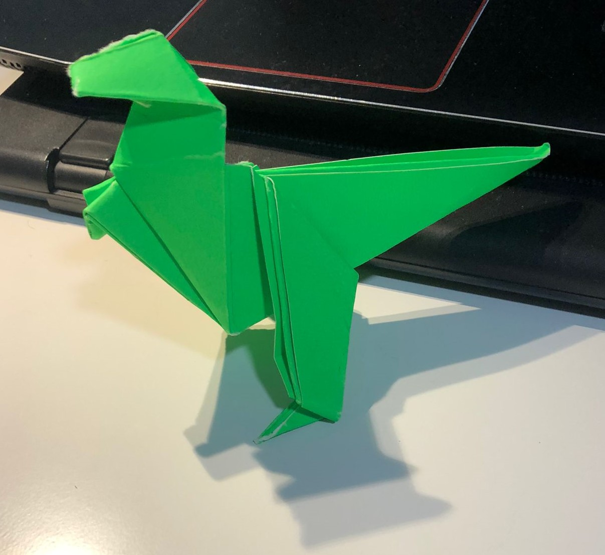
Primero empecé con uno no muy complicado, un dinosaurio, creo que un T-rex. Nada más empezarlo ya me di cuenta de que había un problema, había
elegido unas cartulinas extremadamente gruesas, y por ello, me costaba mucho doblarla y seguir el paso del vídeo, pero me aguanté, ya que no iba
a tirar las cartulinas. El primero no me salió muy bien, rompí un trocito de cartulina, pero tuve suerte y no afectó más tarde ya que esa doblez
acaba escondida. Además, por ser una cartulina tan gruesa, el dinosaurio se abría de piernas.
Después del primero, el cual me llevó unos 30 minutos, aunque el vídeo era de 8, me sentía confiado y elegí uno más chulo y mucho más complejo y
largo. Este origami me llevó 45 minutos y el vídeo era de 20, por tanto se podría decir que seguía mejor el vídeo. Elegí este dragón:
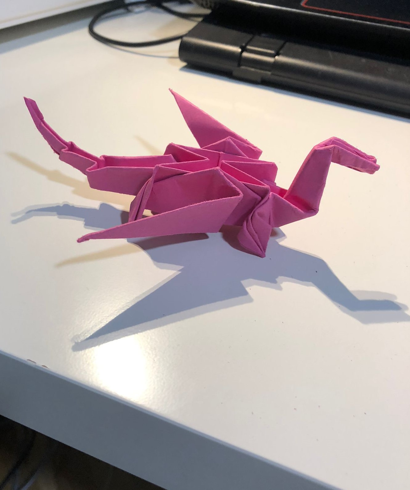
Este me costó bastante más ya que tenía un par de movimientos muy complicados, tenía que volver atrás en el vídeo 10 segundos varias veces, para
enterarme bien. Pero al final logré hacer todo bastante bien, menos la cabeza porque al doblar el papel tantas veces los errores se suman y al
final se notó bastante.
Finalmente, me gustó hacer esta actividad ya que normalmente no me gusta hacer nada de “manualidades” pero si esto se considera una, me ha gustado
mucho. También como he mencionado anteriormente, me ha sorprendido mucho que a una persona se le pueda ocurrir hacer algo de ese nivel de creatividad
y dificultad.
A mi hermano mayor
Desde que comenzó esta evaluación he ido programando poco a poco, me he centrado principalmente en añadir el contenido de la segunda evaluación,
las reflexiones), pero también he ido ajustando errores y mejorando el diseño de la página. Tuve que cambiarla completamente ya que cuando empecé
a programar no estaba viéndolo desde una perspectiva futura.
El cambio más destacable es que he añadido una sección en la página, en la que puedes elegir si quieres ir al inicio de esta, o ir al primero o
segundo año de CAS, lo cual ha cambiado por completo la estructura de la página, he tenido que rehacer gran parte. También he mejorado los
índices indicando todas las actividades de cada evaluación. Ha habido muchos cambios estéticos, principalmente los colores y temas de la página,
ahora es mucho más bonita y agradable. Cambios menores han sido: la separación entre líneas, la separación entre textos, y el tamaño de la letra
mayor hace que se pueda leer mucho mejor.
Lo más importante que he hecho durante esta evaluación es publicar mi página web, antes solo la podía ver yo, pero ahora responde a
http://davidmelchor.github.io/ y también a https://davidmelchor.com/. Lo he hecho usando git, un software útil ya que a parte de ayudarte
a subir tu página web al público, guarda versiones anteriores de tu página y en cualquier momento puedes volver atrás. También he aprendido a
usar git-bash, una especie de consola de comandos, en la que introduces una serie de comandos para realizar acciones más fácilmente que relacionan
tus archivos en tu ordenador y lo que ve la gente cuando busca tu página web, es así:

Al publicarla, me he dado cuenta de muchos errores que tenía y que sigue teniendo, por ejemplo, al publicarla no puedes llamar al mismo elemento de
dos maneras, una con mayúsculas y otra con minúsculas, tienen que llamarse exactamente igual, sino no funciona. También los enlaces se veían
extraños. Otro error que voy a arreglar durante la tercera evaluación es que no se ve igual en movil, mi ordenador o una tableta, tengo que
arreglar las proporciones, por ejemplo, ahora mismo se ve así en un móvil:
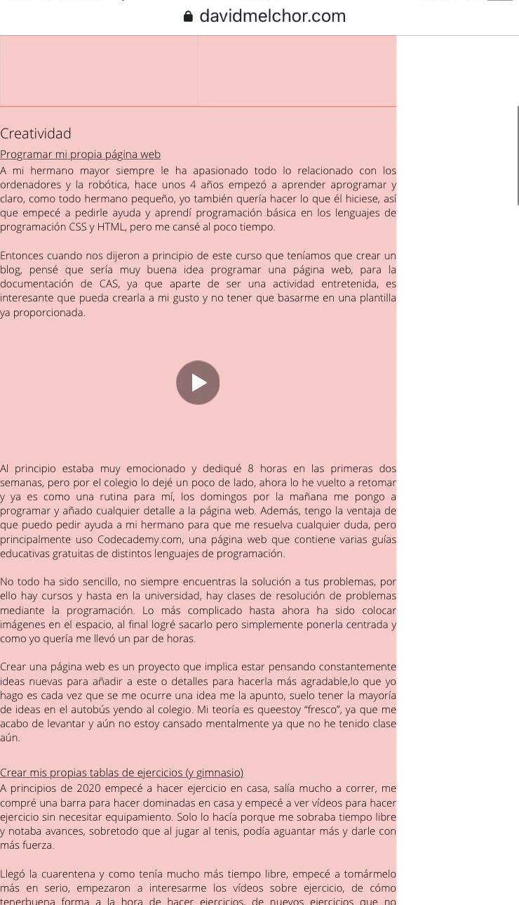
Finalmente, he aprendido bastante de no solo programación como de estética, gracias a mi hermano y mi padre, las personas que me han ayudado,
he solucionado muchos problemas con ellos y he arreglado el aspecto visual de la página. También a veces lo hago yo solo buscando en internet,
pero ellos me ayudan siempre que pueden. Así era antes comparado con ahora:
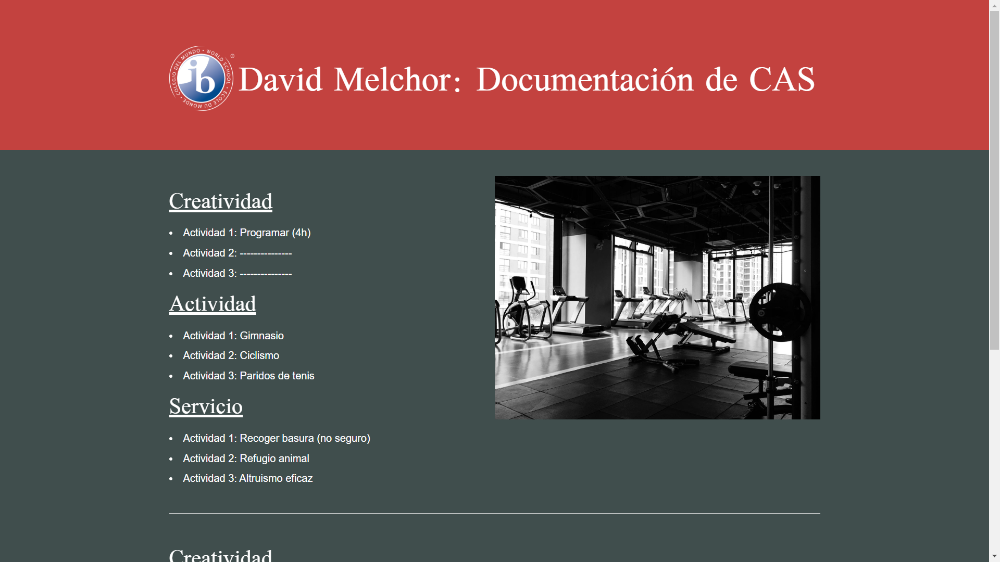
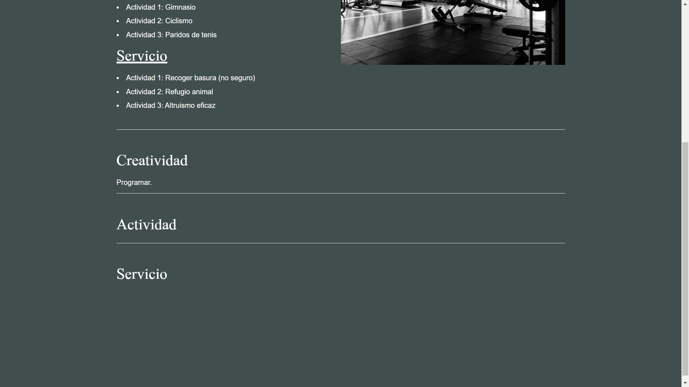
El día de la nevada por la mañana, cuando me enteré de que había nevado tanto, instantáneamente se me ocurrió construir un
muñeco de nieve con mi hermano. A lo largo del día tenía pensado hacerlo, pero no paraba de nevar. Entonces por fin, a las 5 de la tarde dejó de
nevar, mi hermano y yo estábamos dispuestos a salir por mucho frío que hiciese, por ello, nos preparamos con guantes, gorro, varios pantalones puestos
a la vez y botas. Al salir afuera tuve la “gran ocurrencia” (irónicamente) de construir un iglú en el que al menos yo cupiese.
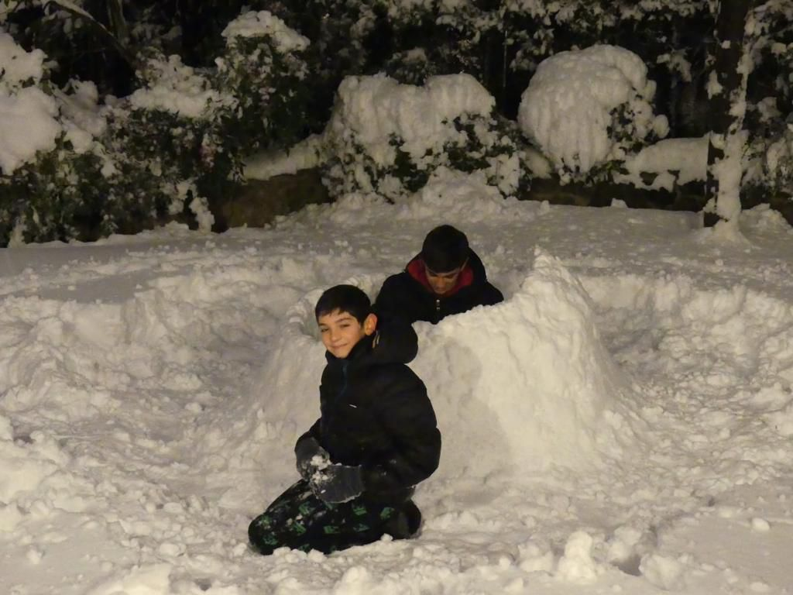
Había tanta nieve que era difícil delimitar dónde queríamos construirlo, al final lo decidimos construir en medio de nuestro jardín. Empezamos haciendo
un gran agujero y construyendo una especie de muralla, vista desde arriba como un círculo, pero le faltaba un trozo, la entrada al iglú.
Luego durante 2h y media seguimos construyendo la altura hasta que basicamente mi madre me dijo que entrase porque iba a acabar enfermo por el frío.
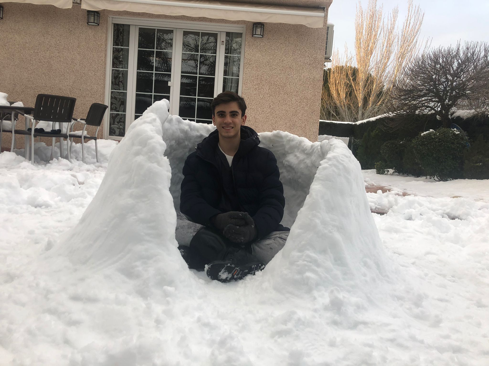
Al día siguiente continuamos, pero por la humedad de la noche, el iglú se había debilitado mucho, y ocurrieron muchos incidentes. No paraba de romperse
y era muy complicado avanzar, ese día construimos muy poco. Pero al día siguiente volvimos con fuerzas dispuestos a construir el techo del iglú, la parte
más delicada y complicada. Empezamos con la curva, pero no pudimos terminarlo ya que empezó a nevar, al volver más tarde vimos que se había debilitado
mucho, y que ya era imposible hacerlo a no ser que empezáramos a reforzar de nuevo desde la base.
Al final dedicamos unas 4 horas entre 3 días. Han pasado ya 2 semanas y aunque ha habido lluvias y viento fuerte, nuestro iglú ha aguantado, y es lo
último que queda de nieve prácticamente en nuestro jardín.
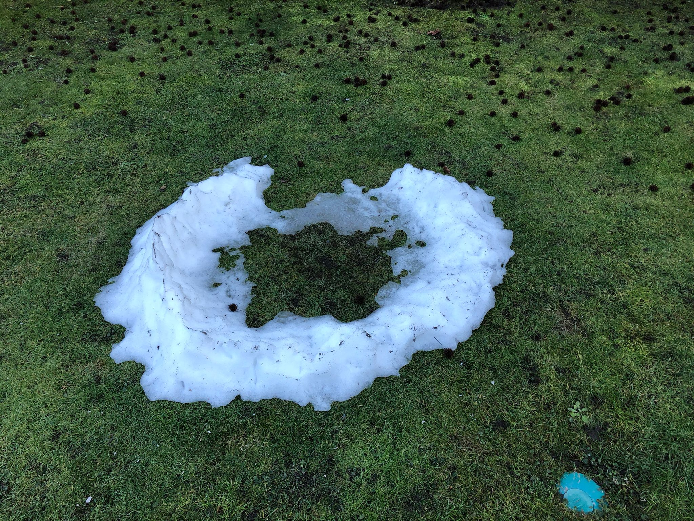
Desde la primera evaluación he adaptado las tablas de ejercicios dadas las complicaciones de este, como la nieve y que
durante la Navidad no he podido ir tanto como me habría gustado. Además, este trimestre se ha vuelto más complicado el colegio, por tanto no he podido
ir tanto al gimnasio.
Principalmente lo que he ajustado esta evaluación ha sido la flexibilidad de estas, por ejemplo, he cambiado el plan de ir 6-5 veces a la semana a uno
que no depende de los días de la semana, sino que solo tiene un orden. También me he centrado en optimizar al máximo el tiempo que voy, por tanto hago
más ejercicios compuestos y menos específicos.

Pero siempre he mantenido una serie de criterios, por ejemplo siempre que voy, estoy mínimo 50 minutos y mínimo por semana voy 4 veces.
Nunca he sido de las personas que se apuntan su tabla y la siguen a la perfección ya que siempre hay algo que falla, como por ejemplo que la máquina
esté siendo usada por otra persona. Por ello, me he creado un plan que es doble, con esto quiero decir que si hay algún problema puedo seguir otro
camino. Por ejemplo, para los días que hago piernas, tengo dos rutinas y dependiendo de cómo me sienta y la cantidad de gente que haya, elijo uno u otro.
Finalmente, como conclusión, se podría decir que esta evaluación me he convertido en alguien más flexible lo cual es bueno pero también suele convertirte
en alguien más perezoso, lo cual intento evitar lo máximo que pueda.
Durante el segundo trimestre, he continuado yendo al gimnasio. Ha habido bastantes complicaciones comparado con el primer
trimestre, este trimestre se ha vuelto más complicado el colegio, por tanto al tener más deberes no he podido ir tanto al gimnasio, lo cual no ha
sido malo del todo.
Que la dificultad de los estudios incrementase ha hecho que me volviese más flexible a la hora de cumplir el horario del gimnasio, antes me
fastidiaba mucho no poder ir siempre, ahora lo acepto y me adapto de una manera o de otra. También he recopilado el doble de experiencia y
así puedo optimizar mejor el tiempo que uso para entrenar.
Otro problema ha sido la nevada y la navidad en general. La Navidad ha hecho que por los días festivos, el gimnasio estuviera cerrado y también
por la nevada no pude ir al gimnasio en una semana. Al volver volvió a encantarme el gimnasio y ese descanso en el fondo fue bueno mentalmente.
Sigo mejorando en los desafíos que me propongo como hacer 12 dominadas durante 4 series, pero ese desafío creo que me va a llevar mucho tiempo
ya que, aunque es mi objetivo principal, se avanza muy despacio. Otro desafío que veo más viable a largo plazo es que en la tercera evaluación
llegue a 75 de press de banca. También estoy muy orgulloso de mí mismo porque he incrementado mucho mi peso muerto, un ejercicio compuesto
muy efectivo, empecé esta evaluación con unos 60 kg aproximadamente y ahora mismo, a día de hoy puedo hacerlo con 80 kg y 6 series de 8
repeticiones, además de conseguir por fin la técnica perfecta, algo que aún tengo que conseguir con las sentadillas. Se podría decir que mi
objetivo final es vencer la pereza y hacer ejercicio cardiovascular (cardio), el cual es el tipo de ejercicio que más odio.
Esta semana la actividad realizada ha sido el Balonmano, el cual en un deporte de equipos, el cual se juega con una pelota de un tamaño medio,
más o menos la mitad que una pelota de fútbol. El balonmano se parece mucho al fútbol, las diferencias principales entre los dos son que se juega
con las manos en vez de los pies y también una regla importante es que el área que rodea a cada portero no se puede atravesar. Otra diferencia es
que si el balón pasa la línea de portería el balón es siempre para el portero. Finalmente los equipos son de 7 personas.
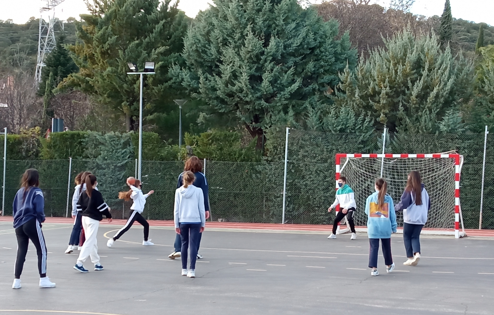
El balonmano también es un deporte que me gusta mucho, ya que soy muy torpe a la hora de usar los pies, pero se me da bien correr y botar. Además,
no es como en el baloncesto que me cuesta mucho encestar, sino que la portería es bastante amplia y el lanzamiento es más sencillo.
No recuerdo muy bien quién estaba en mi equipo, sí que recuerdo que hasta ahora ha sido uno de los mejores días ya que todo el mundo participaba,
y recuerdo que no estaba desnivelado ningún equipo. Finalmente creo recordar que mi equipo llamado: “David, Mireya and company” quedó primero.
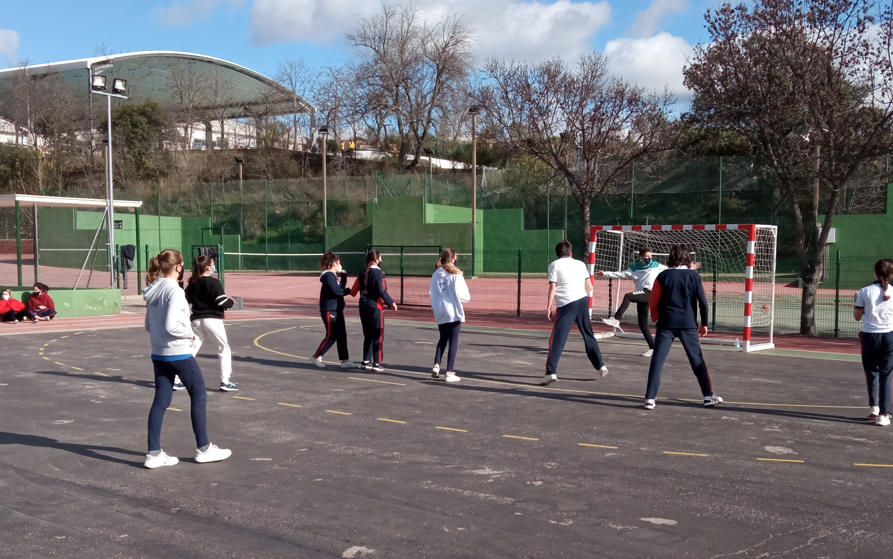
El viernes pasado en clase de CAS, nuestra clase jugó al voleibol de playa, en esencia es lo mismo que el voleibol pero en arena. Por tanto,
jugamos en la pista de arena y nos dividimos en 4 equipos de 5 personas cada uno. Mi equipo estaba formado por: Claudia Jiménez, Juan Álvarez,
Patricia Sánchez, Candela Pedredo y finalmente, por mí.

Recuerdo que nuestro equipo no era malo, perdimos 2 partidos y ganamos uno, además recuerdo que como nos lo estábamos pasando bien, yo,
“inteligentemente”, decidí sacar por arriba cuando ibamos 15-14 ganando, y fallé, por ello acabamos perdiendo pero fue divertido al final.

El viernes pasado durante las horas de CAS, las dos clases del IB realizamos una ruta por la montaña de detrás del colegio,
que pasaba por la Presa de El Gasco, y luego continuaba hasta prácticamente la cima de esta pequeña montaña.
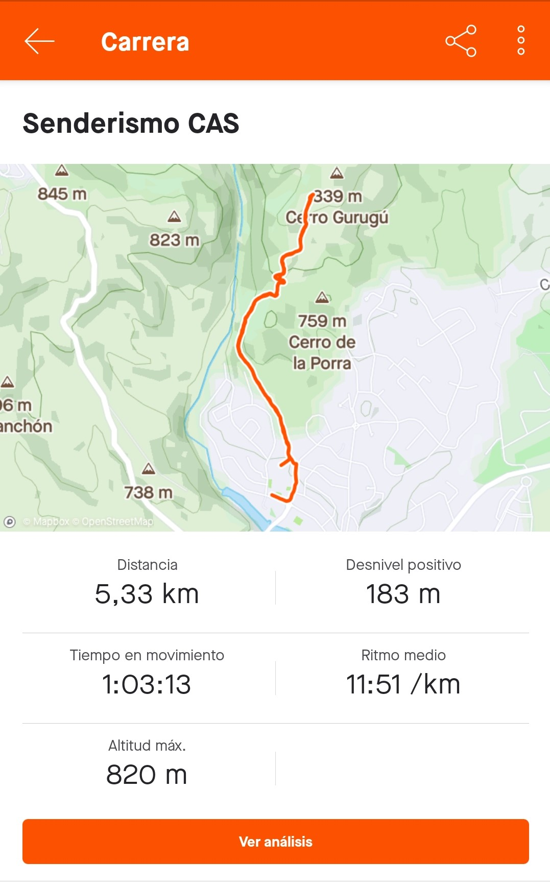
Primero nos reunimos todos en el patio de los niños pequeños, en el campo de baloncesto del fondo. Desde ahí comenzamos a andar y aproximadamente
a los 10-15 minutos llegamos a ver la presa. Luego decidimos parar uno o dos minutos y a partir de ese momento, las quejas empezaron. Se oía cada
dos por tres a alguna persona diciendo: ¿Cuánto nos queda?, y gente diciendo que ya estaba muerta y que iba a bajar rodando.
Tardamos unos 15 minutos en llegar al punto más alto, 820 metros, desde arriba creo que todos nosotros intentamos identificar donde estaban
varios lugares de Las Rozas, como el colegio de pequeños o el Heron City, lo cual yo considero que fue lo más interesante de todo, ya que nunca
antes había visto Las Rozas así, y en el fondo es divertido ubicarte en tu cabeza.
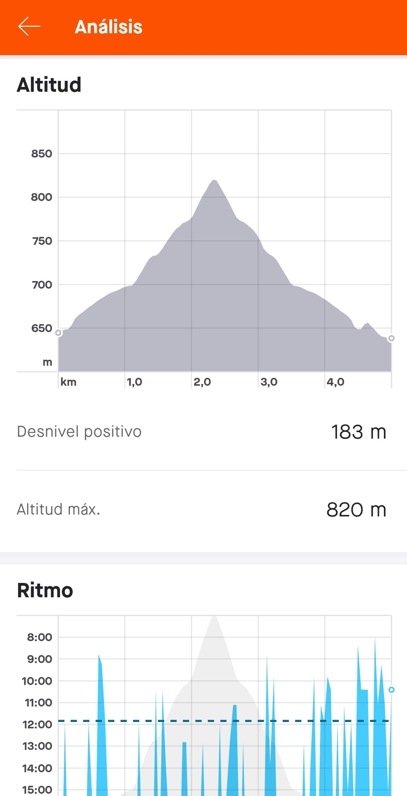
La bajada se pasó bastante rápido porque estuve hablando con amigos, y yo creo que tardamos menos que en la subida, y recorrimos unos 5 km en
1 hora. Finalmente considero que es una buena actividad de CAS ya que a parte de hacer actividad física, nos informamos de lo que está a nuestro
alrededor. Llevo más de 10 años en este colegio, y nunca antes había pasado por ahí.
El viernes pasado en clase de CAS jugamos al baloncesto, un deporte bastante popular de equipos compuestos por 5 personas.
El objetivo es encestar un balón, más bien duro a través de un aro que está a unos 3 metros de altura. Se juega con las manos, haciendo pases
y botando el balón, para lograr acercarse a la canasta y encestar más fácilmente.
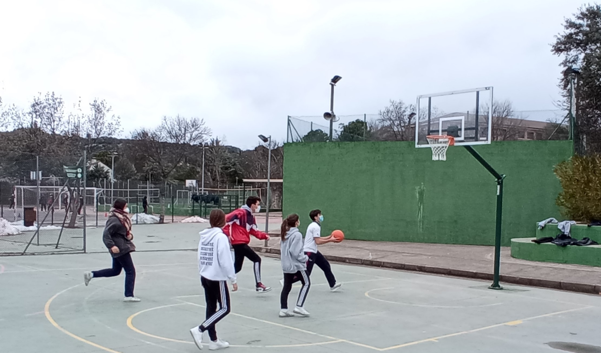
Para jugar nos dividimos en equipos, el mio estaba formado por Juan Álvarez, Alba Salgado, Hannah Jungbluth, María Casás y yo. Sinceramente
éramos los peores, aunque lo intentamos, no conseguíamos encestar ninguna, podíamos pasar perfectamente y correr, pero no podíamos competir
con otros que sí que sabían jugar al baloncesto. Encestamos unas 5 veces en 4 partidos, una vez fui yo, dos veces María y dos Juan.
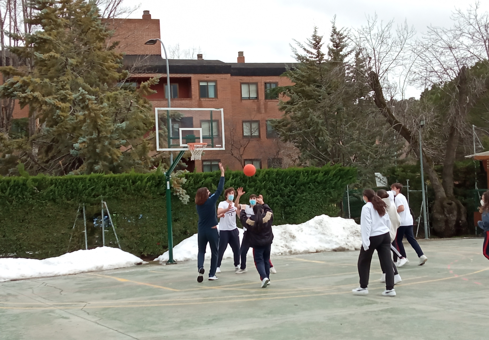
Finalmente, podría concluir en que el baloncesto cada vez me gusta más, yo me considero una persona razonablemente buena en todos los deportes,
y por ello creo que a medida que mejoro en uno, mejoro en todos. Creo que se me da bien correr y pasar, pero sé que mi punto débil ha sido siempre
el lanzamiento, si quiero encestar tengo que hacer los tres pasos perfectos, saltar, y ya cuando estoy extremadamente cerca de la canasta, ya
tiro y encesto.
Hace una semana, durante la hora de CAS, jugamos a un deporte nuevo, para mí, llamado lacrosse. Nunca antes lo había jugado,
solo sabía que existía, pero ni siquiera sabía las reglas. El lacrosse es un deporte de equipos de 10 personas en el que se usa un palo con una
red para pasar y recibir una pelota pequeña con el objetivo de meter goles en la pequeña portería del equipo enemigo. Finalmente, este deporte
es popular en Estados Unidos y Canadá.
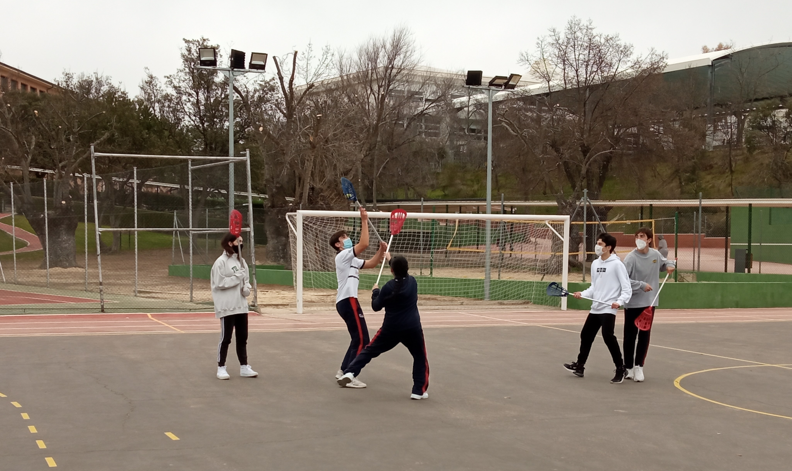
Mi equipo compuesto por solo 4 personas, comparado con el resto de equipos, estaba compuesto por: Juan Álvarez, Vega Donate, Bruno Beteta y por
mí. Yo jugaba de portero escoba para hacerlo más justo, pero aún así estaba muy desnivelado, recuerdo que no jugamos mal para ser la primera vez,
pero todos éramos muy torpes. Ganamos un partido contra el equipo de Diego Finkel, y perdimos los otros dos, pero yo me quedé agusto porque acabé
sudando y me paré bastantes tiros, de hecho recuerdo que me picaron algunos, con el muslo me paré una y dolió bastante.
Sinceramente el lacrosse es un deporte que no me gusta, soy muy torpe y además no me gusta como es el deporte en sí.
El sábado pasado, sábado 16 de enero, la actividad que realicé fue recoger nieve a lo largo de mi calle, dado
que había una cantidad razonable de nieve porque el quitanieves no pasó por mi calle. La nieve era mucha menos que al principio, pero yo veía que
el hielo llevaba ahí varios días y que parecía que no se iba a ir sin ayuda.
Lo hice este día y no antes, porque sinceramente no tenía pensado hacerlo, ya con hacer un iglú me bastaba, pero lo hice porque ese día por la
mañana, mi madre me obligó a salir a recoger nieve delante de nuestro garaje para poder sacar el coche el lunes (cosa que no se hizo al final).
Entonces cuando me iba a poner a recoger pensé que podía recoger parte de la nieve de enfrente de los vecinos de al lado, ancianos con los que
nunca he hablado, y el principio de la calle, ya que yo vivo en la primera casa, y beneficiaría a toda la comunidad en su conjunto.
Primero me dediqué a limpiar la puerta de mi garaje, para que se pudiera abrir, y en vez de echar nieve al lado, la aparté lejos así mientras,
optimizaba mi trabajo, ya que también iba a limpiar la parte de fuera de la casa de los vecinos. Dediqué unas dos horas ya que el hielo era
difícil de quitar con una mini pala que tengo, pero me ayudaron mis hermanos, al final pude quitar la mayoría de las placas de hielo para que
se pudieran abrir sus puertas de los garajes pero hubo algunas que dejé porque eran imposibles de quitar. (En esta foto se ven los dos caminos para las ruedas)
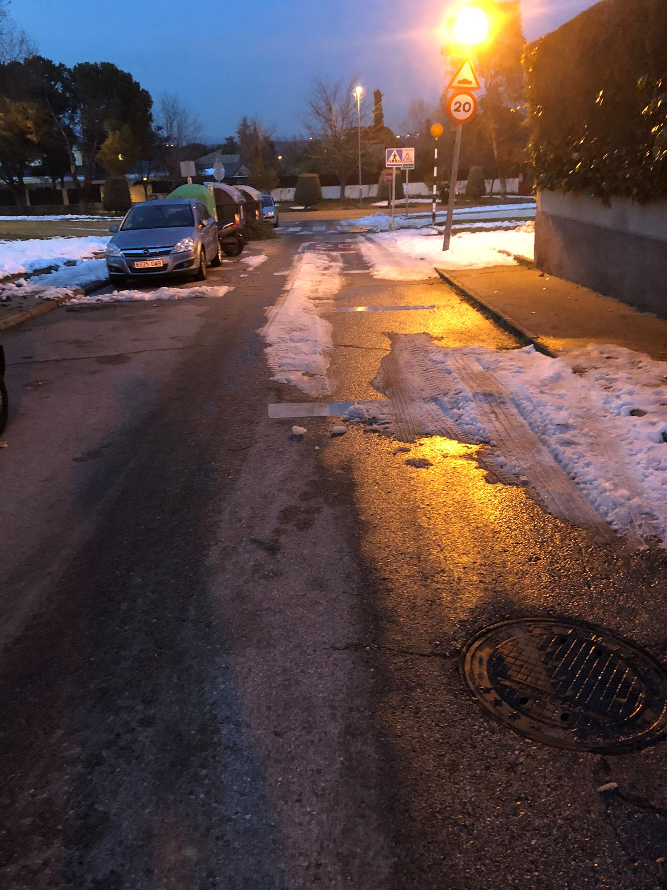
En vez de descansar, como sabía que si paraba no lo iba a hacer luego, fui directo a quitar el hielo del principio de la calle, el cual fue
más sencillo porque en esa zona había menos por alguna razón. Hice dos caminos para las ruedas y quité nieve del centro para que el coche por
debajo no rozase con el suelo, todo aun con ayuda de mi hermano mayor ya que mi hermano pequeño dijo que se había hecho daño y paró.
Finalmente, yo considero que mi trabajo no parece mucho, pero en el fondo dediqué 3 horas, en estas fotos muestro el resultado final de la calle:
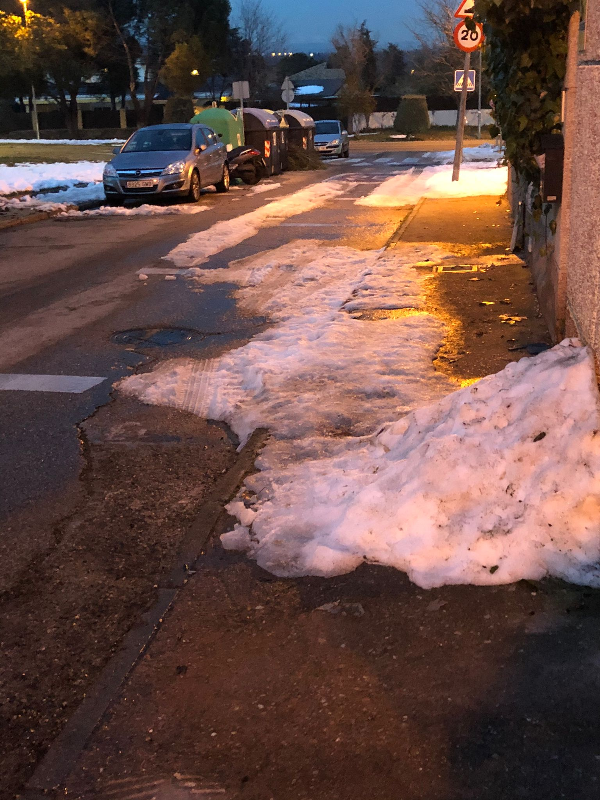
Antes de las vacaciones de Navidad, una alumna de segundo de bachillerato nos propuso escribir algunas cartas
felicitando la Navidad a los ancianos de la residencia de al lado del colegio, ya que este año por la pandemia no nos es posible ir a visitarlos.
Yo la hice con Víctor Baeza, nos dividimos el trabajo en dos partes para poder hacerlo por separado, él hizo el dibujo y yo redacté la carta.
Nosotros creamos la tarjeta de Navidad para Mari Carmen. Mientras que la redactada, pude apreciar la soledad de estas personas, me di cuenta de
que esto posiblemente podría subirles el ánimo un poco viendo que hay personas que sí que piensan en ellos. También pensé que seguramente algún
anciano no la apreciaría ya que pensaría que lo hacemos porque sí, que nunca lo hemos conocido, pero en el fondo espero que a todos les haya
gustado su tarjeta.
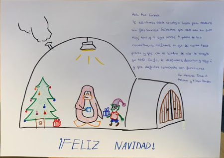
Probablemente para escribir estas 100 palabras dediqué unas dos horas ya que no quería que sonase mal y que de verdad lo apreciara Mari Carmen.
También lo escribí dos veces a lápiz antes de cambiarlo a bolígrafo ya que no me cabía en ese espacio reducido y quería hacerlo bien.